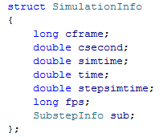

SimulationInfo

This struct contains information about temporal simulation steps.
long cframe
The current simulation frame
double csecond
Defines the length of a second. This is not necessarily the same as a second in Cinema 4D depending on FPS and timestep.
double simtime
The current time of the simulation given in seconds. This is not necessarily the same as Cinema 4Ds time.
double timestep
The length of the current time step given in seconds.
double stepsimtime
The current time step of the simulation given in seconds.
long fps
The frames per second of the simulation.
SubstepInfo sub
Substep information. See SubstepInfo for more details